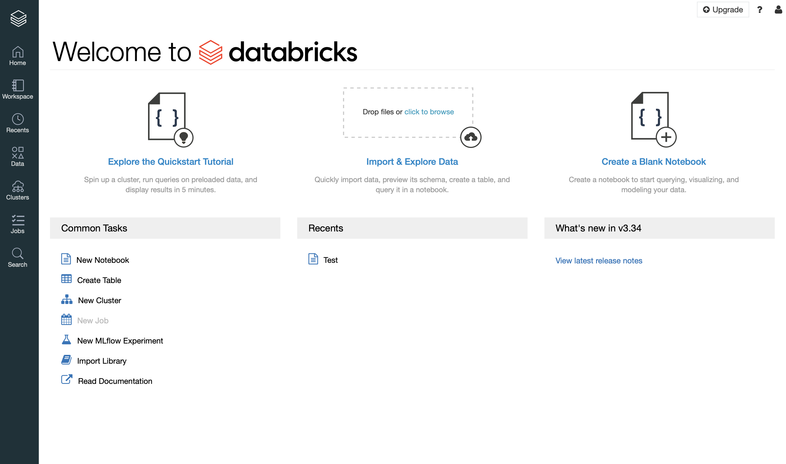
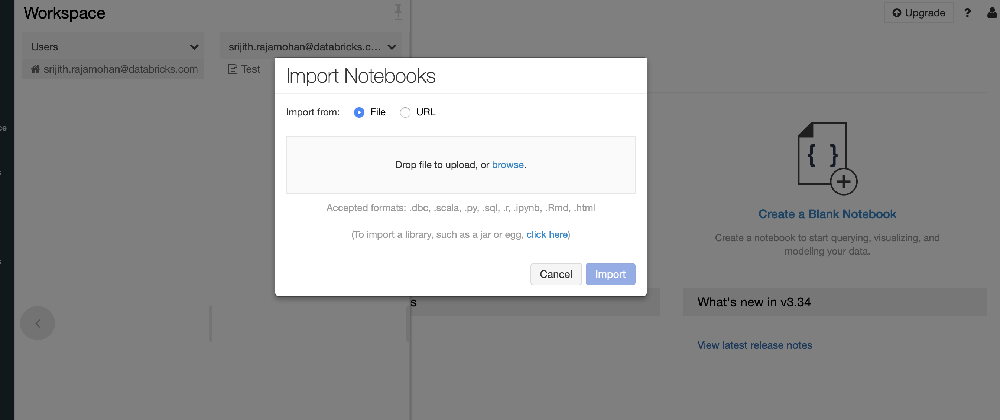
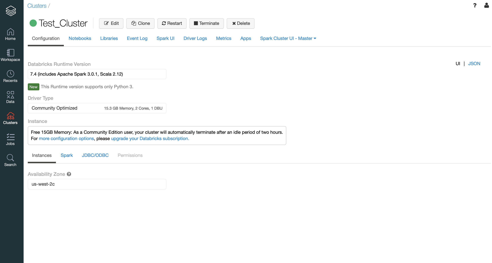
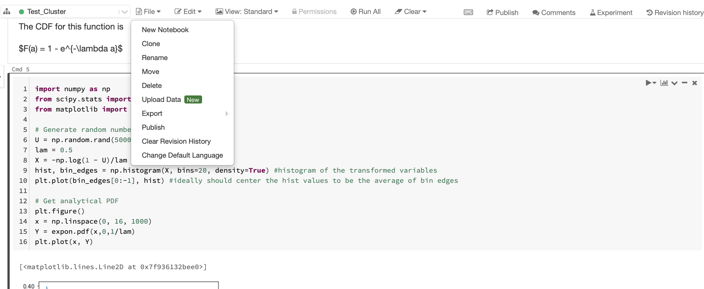

Introduction to the Databricks Environment¶
The Welcome page¶
As you log in, this is the screen that you see.

You can import a notebook into the workspace using the tab on the left. Use it to import the notebooks for the course.


Upload a notebook or provide a path to a notebook. Once it has been successfully uploaded, you should see a page like this.

Launch a cluster to run the notebook by selecting the configuration for the image.

Once launched, you should see a green circle.

You can click on the Clusters tab on the left and check the status of the available clusters.

If any libraries were installed during the creation of the cluster, they would show up here.

Install a Python library by providing the library name and a version. It is a good idea to specify the version explicitly.

Attach a running cluster to the notebook

The File dropdown menu

The Edit dropdown menu

Execute the code cell.

Integrate with a Git repository

Version control the notebook and save to the remote Git repository.